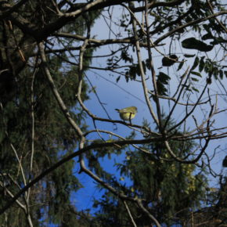

American goldfinch
Classification: Passerine
What it looks like:The breeding male has a lemon-yellow overall with black cap, wings and tail with some white. Beak is small. The tail is notched, and both male and female’s plumage becomes more dull in the winter.
Behavior: Very active bird that cling to weeds and seed stocks, they are occasionally found in large numbers at feeders or the ground below. They will often call in flight, and fly with a bouncy pattern.
Size: About the same size of a sparrow, or smaller
Habitat: They’re most common around floodplains and weedy fields, but they’re also found on roadsides, orchards, and backyards.
Song:”Per-chik’-o ree” and “sei silieeeee” in a song
Diet: Will occasionally eat insects, but diet mainly consists of seeds from plants such as thistle, dandelion, and alder. They will also consume tree buds, maple sap, and berries. Will eat from a bird feeder, but mainly in the winter months.

